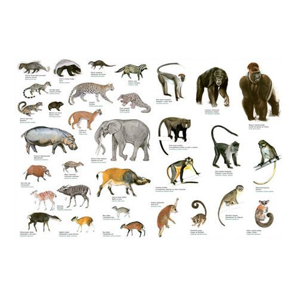
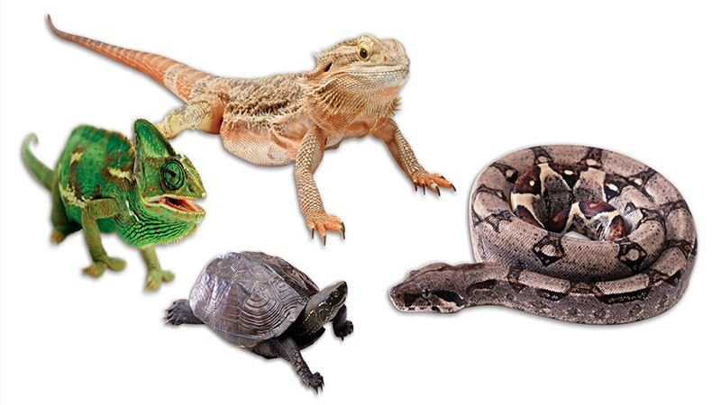
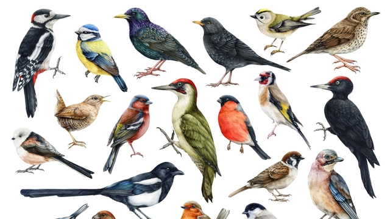

Memeliler
Memeliler (Latince: Mammalia), hayvanlar aleminin insanların da dâhil olduğu, dişilerinde bulunan meme bezleri ve hem dişi hem erkek bireylerinde bulunan ter bezleri, kıl, işitmede kullanılan üç orta kulak kemiği ve beyinde yer alan neokorteks bölgesi ile ayrılan bir omurgalı sınıfıdır.
Sürüngenler
ürüngenler (Latince: Reptilia), omurgalıların soğukkanlı, yumurtlayarak çoğalan, büyük bir sınıftır. Basitçe yılanlar, kertenkeleler, kaplumbağalar, timsahlar ve tuataralardan oluşur.
Kuşlar
Kuş; tüyleri, dişsiz gagaları, yumurtladıkları sert kabuklu yumurtalar yoluyla üreyen, yüksek metabolizma hızına sahip, dört odacıklı kalpleri ve hafif ama güçlü bir iskelet yapısına sahip, Aves sınıfını oluşturan sıcakkanlı omurgalı hayvanlar grubudur.
